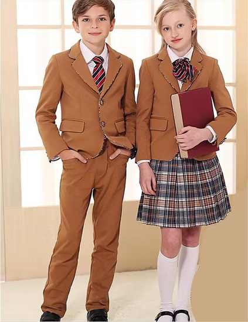

FrenchToast: Your Family's Destination for School Preparation

As families across the country gear up for another school year, one brand has consistently stood out as the go-to destination for school uniform shopping: FrenchToast. For over three decades, this trusted retailer has been simplifying the back-to-school experience for millions of families with their comprehensive range of quality uniforms and school essentials.
The FrenchToast Legacy: Built for School Success

Founded with the mission to make quality school uniforms accessible to every family, FrenchToast has evolved from a small uniform supplier to America's leading school uniform retailer. The company understands that school preparation extends far beyond just purchasing clothes – it's about setting students up for success with comfortable, durable, and confidence-building attire.
What sets FrenchToast apart is their deep understanding of what schools, parents, and students need. Their extensive catalog includes everything from traditional polo shirts and khakis to modern athletic wear and seasonal outerwear, all designed with the school environment in mind.
Comprehensive School Uniform Solutions

Girls' Uniform Essentials include a complete range of options from classic pleated skirts and jumpers to modern athletic shorts and performance polos. FrenchToast's girls' collection focuses on both style and functionality, ensuring students feel confident while meeting dress code requirements.
Boys' Uniform Standards feature durable pants, comfortable polo shirts, and dress shirts that can withstand the daily adventures of school life. The collection emphasizes easy care fabrics and reinforced construction in high-wear areas.
Extended Sizes and Inclusive Options
Understanding that students come in all shapes and sizes, FrenchToast offers an extensive size range including plus sizes, husky fits, and slim options. Their commitment to inclusivity ensures every student can find uniforms that fit properly and feel comfortable throughout the school day.
Quality That Withstands the School Year

One of FrenchToast's greatest strengths lies in their fabric technology and construction quality. Their uniforms are designed to endure multiple washings, resist stains, and maintain their shape and color throughout the academic year. Key features include:
Easy Care Fabrics: Wrinkle-resistant materials that look crisp even after a full day of activities. Most items can be machine washed and dried, saving busy families time and money on dry cleaning.
Stain Release Technology: Many FrenchToast items feature built-in stain protection, making lunch spills and playground mishaps less of a concern for parents.
Affordable Pricing for Every Budget

FrenchToast recognizes that outfitting multiple children for school can be a significant expense. Their pricing strategy focuses on providing maximum value without compromising quality. Regular sales, bulk discounts, and school-specific pricing programs help families stretch their back-to-school budgets further.
The company's School Partner Program works directly with educational institutions to offer exclusive discounts and simplified ordering processes. This partnership approach ensures that families have access to approved uniform items at competitive prices.
Convenient Shopping Experience
FrenchToast has invested heavily in creating a seamless shopping experience both online and in retail locations. Their website features school-specific stores, making it easy for parents to find exactly what their child's school requires. Advanced filtering options allow shoppers to sort by size, color, price, and specific school requirements.
School Store Locator: Simply enter your school's name to access a customized store with pre-approved uniform items, correct colors, and any special requirements.
Size Guides and Fit Assistance: Detailed sizing charts and fit guides help ensure the right size selection, reducing returns and exchanges.
Beyond Uniforms: Complete School Preparation
While uniforms remain their core focus, FrenchToast has expanded to offer a complete school preparation solution. From backpacks and lunch boxes to socks and belts, families can find everything needed for a successful school year in one convenient location.
The brand's commitment to supporting student success extends beyond just providing clothes – they're helping families create positive school experiences that build confidence and promote learning.
Conclusion
FrenchToast has earned its reputation as America's trusted school uniform destination through decades of commitment to quality, affordability, and customer service. As families prepare for the upcoming school year, FrenchToast continues to evolve and adapt, ensuring that students are dressed for success and ready to tackle whatever the academic year brings.